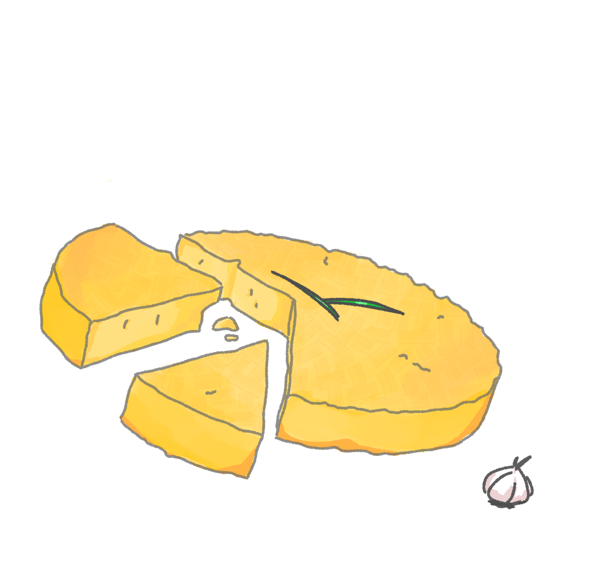

Мазурик
Архів гастрономічних скарбів

Буришник
Буришник - це смачна українська страва, яка приготовлюється картоплі та нагадує зрази. Назва походить від слова "буришка", так називають в Карпатах картоплю
- Інградієнти:
- 1кг картоплі
- 70г кукурудзяної крупи
- 15г пшеничного борошна
- 1 яйце
- 100г вершокового масла
1 година